Cutting Quotation Time by 57.2% for 1,500+ Enterprise Logistics Clients
The quotation process was slow and Sales were losing deals. I found the bottleneck, designed a faster workflow, and helped cut quotation completion time by 57.2%.
Overview
The Short Version
Waresix is an Indonesian logistics SaaS platform serving 1,500+ enterprise clients. The quotation process involved three teams working in sequence: Sales secured customer orders, Supply gathered vendor prices, and Pricing finalized everything. This handoff-heavy flow was slow, and Sales often lost deals because they could not get prices to customers fast enough.
I was assigned to figure out where the process broke down and design a faster workflow. Through job shadowing, interviews, and time-motion analysis, I found that the biggest bottleneck was the Supply team. They were doing repetitive work because the system did not let them reuse pricing data that already existed. I explored two possible directions, presented the trade-offs to stakeholders, and the team chose the bolder option: let Sales set prices directly using historical data, with an approval flow for risky quotes.
After testing and iteration, the redesigned quotation flow reduced completion time by 57.2%, measured from a monitoring dashboard the PM team set up.
Context
Context
What is Waresix?
Waresix is a B2B logistics platform that connects businesses with trucking, warehousing, and freight services across Indonesia. Enterprise clients use the platform to request shipment quotes, and internal teams process those requests through a multi-step workflow. The quotation process is one of the most important flows in the business because it directly affects how fast Sales can close deals.
Why this project mattered
The existing quotation process was too slow. Sales would get a customer request, pass it to Supply to gather vendor prices, then wait for Pricing to finalize the numbers. Each handoff added delays, and Sales often lost potential deals because they could not respond to customers quickly enough. The company needed a faster process that still maintained pricing accuracy and profitability controls.
My role
I was the sole UX designer on this project, working with a Product Manager, UX Researcher, Engineering Manager, and team leads from Sales, Supply, and Pricing. I handled the research, journey mapping, solution design, prototyping, usability testing, and stakeholder alignment. The project took about one month from research through handoff. This was one of several projects I worked on during my time at Waresix.
Research
Discovery: Finding the Bottleneck
I started with job shadowing and interviews, focusing on the Supply team since they were identified as the main bottleneck in the process.
I sat with Supply officers and watched them work through their daily tasks. I also did a time-motion study, tracking how long each step took to find where the most time was being lost.
Four issues came up consistently:
The core insight was simple but important: Supply officers were spending most of their time on work that had already been done before. The pricing data existed in the system, but there was no way to access it for new requests.
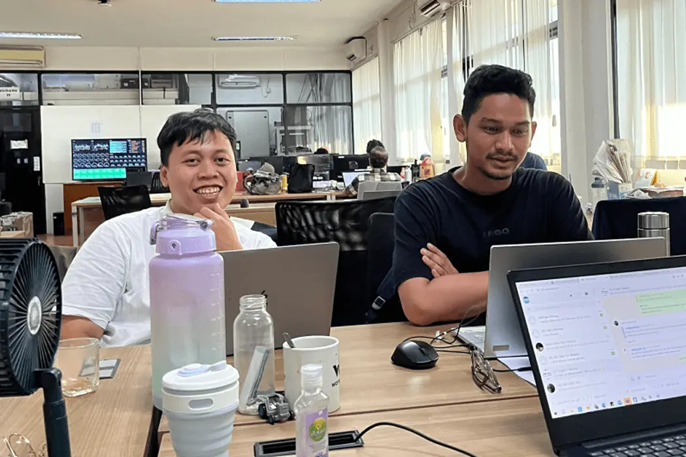
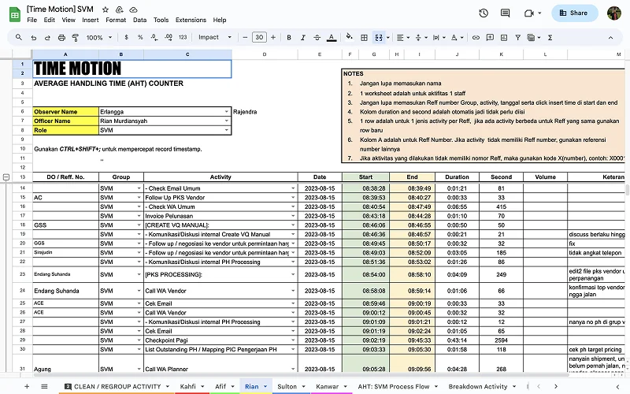
Mapping
Mapping the Journey
I mapped the full user journey across all three teams (Sales, Supply, and Pricing) to see the complete picture. This showed how many repetitive tasks and dependencies existed in the process.
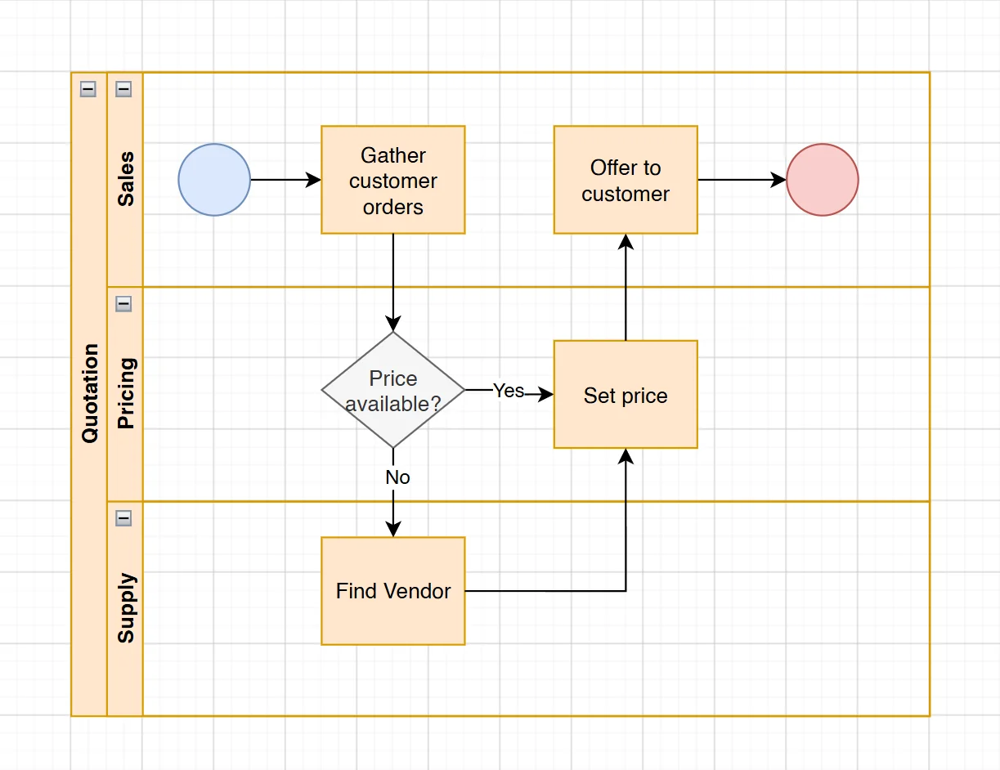
The journey map made it clear that the bottleneck was not just about Supply being slow. It was about the entire process being designed around sequential handoffs when some of those handoffs were unnecessary. If Sales could access pricing data directly, they would not need to wait for Supply at all on orders where historical data was available.
Strategy
Two Possible Directions
Based on the research, I sketched two possible solutions and presented the pros and cons of each to stakeholders.
I presented both options with their trade-offs. Option 1 was safer but did not fix the core bottleneck. Option 2 was faster but needed safeguards. The team chose Option 2, and we added an approval flow where quotes flagged as potentially unprofitable would automatically be sent to a manager for review before going to the customer.
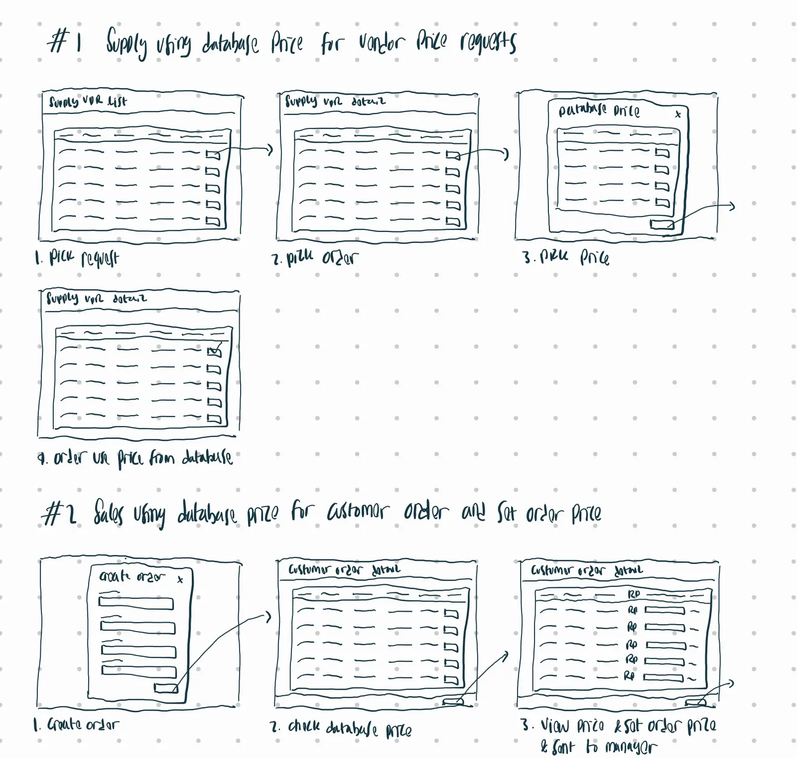
Sales resistance
This is where things got interesting. The Sales team pushed back on Option 2 because it meant more work for them. Under the old process, they just handed off the order and waited. Now they were being asked to look up pricing data, set margins, and take responsibility for the numbers. From their perspective, this was adding work to their plate.
I had to make the case that while the new process required more effort per order, it also meant they could respond to customers much faster and close more deals. The approval flow also protected them. If a quote was flagged as unprofitable, it would go to a manager instead of going out with bad pricing. They were not taking on all the risk.
It took some back and forth, but once Sales saw the prototype and understood that they could go from receiving a customer request to sending a quote in minutes (instead of days), they came around.
Design
Low-Fidelity Prototype
I created a flow where Sales could check past prices, set profit margins, and request approvals. During stakeholder reviews, two things came up:
- The new flow had to feel as simple as the old one. Adding complexity would just create a different kind of slowdown.
- Price approvals should be automated where possible. If a quote was profitable, it should go through without manual review. Only risky quotes needed manager approval.
Engineers raised concerns about linking to legacy pricing data. We worked together to define what data would be accessible, what the access rules would look like, and what should happen when no historical data existed for a given route.
Based on this feedback, I simplified the navigation, added automatic approval triggers based on profit thresholds, and designed clear step-by-step screens.
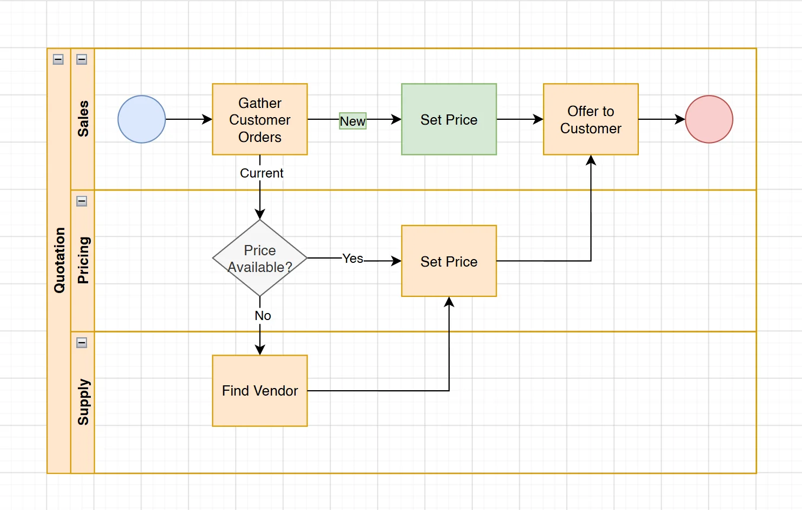
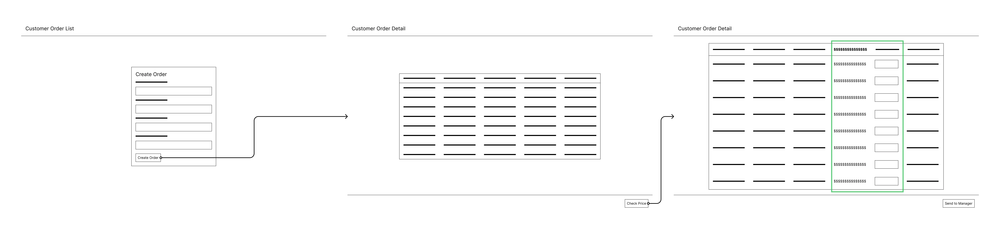
Design
High-Fidelity Prototype
The final design covered the full quotation flow:
Create Quotation and Order Requirements
A simplified entry screen where Sales could fill in shipment details (customer, service type, routes). The interface used tagging for organization and showed price suggestions based on historical data.
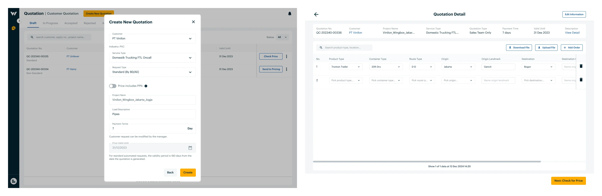
Price Checking
After entering order details, the system showed recommended prices based on past data. Each line item displayed the cost, target price, sales margin, and a selling price field. Simple up/down arrows and check/exclamation icons indicated whether the pricing looked good or needed attention, based on the calculation between customer target price, database price, and the price being offered.
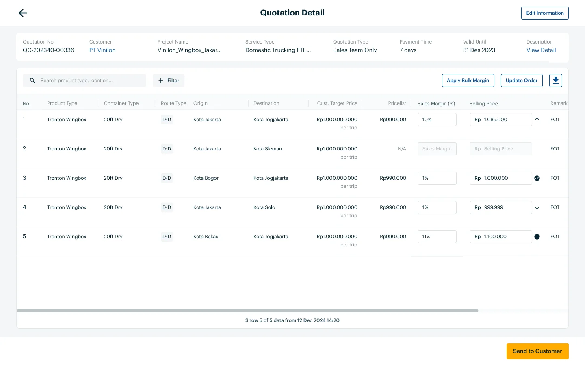
Request Approval
If any items in the quote were unprofitable (selling price lower than cost), the system automatically flagged the quote and required manager approval before it could be sent to the customer. Sales could add a note to the manager explaining why they set the price that way, and attach supporting documents.
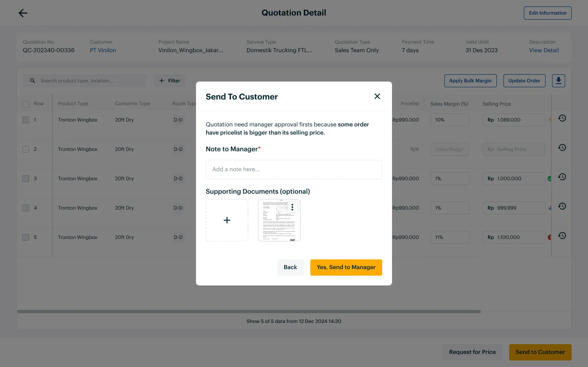
Email Approval Flow
Managers received an email notification with the quotation details and a link to review and approve directly.
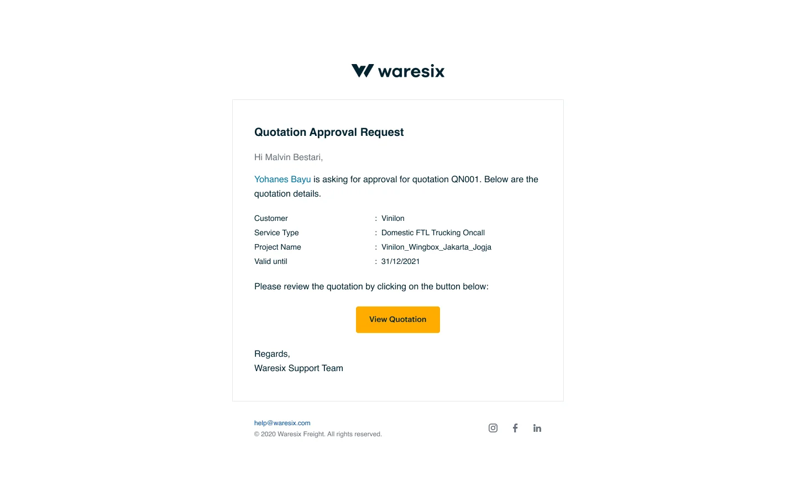
Auto-Generated Quotation Document
Once a quote was approved (or if it passed the profitability check automatically), the system generated a formatted quotation document ready to send to the customer.
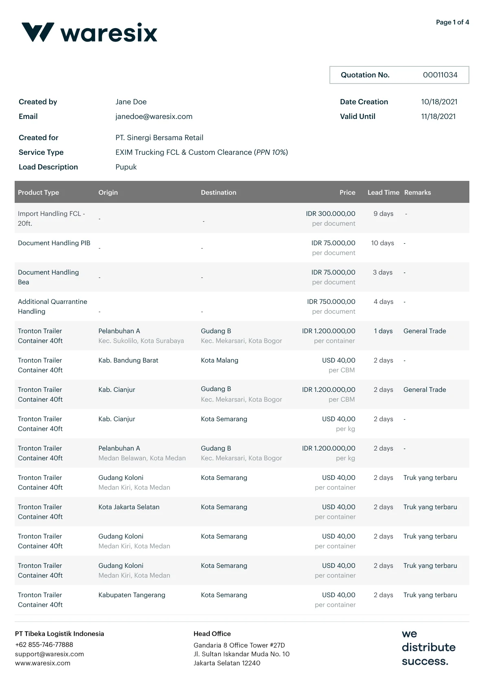
Usability Testing
Usability Testing
I tested the prototype in person with five Sales officers. Their feedback was direct and practical. Three main points came up:
- "I need to see past prices." They wanted quick access to what similar orders had been priced at before, so they could set competitive but profitable prices.
- "I can't tell if this quote is profitable." The initial design did not make it obvious enough whether a quote would make or lose money. They needed clearer visual signals.
- "What if there's no past data?" For new routes or new vendors, there was no historical pricing. They needed a fallback option.
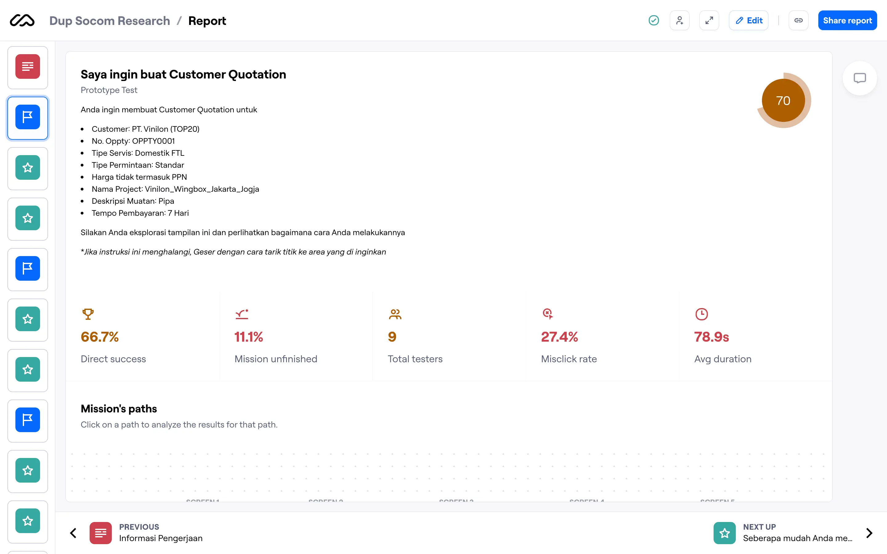
What I changed after testing
- Replaced the simple arrow and icon indicators with color-coded profit/loss indicators (green, yellow, red) on each line item so profitability was visible at a glance. This directly addressed the "I can't tell if this quote is profitable" feedback.
- Designed a Price History view and a searchable Price Book so Sales could look up past pricing for any route and vendor. The Price History showed previous quotes for the same product and route, while the Price Book was a centralized, filterable list of all vendor agreements and pricing.
- Added a "Request Price" option for orders where no historical data existed, which would route the request to Supply to gather vendor quotes the traditional way.
- Added Trip Details and Documents sections so Sales could see context on past shipments (route map, timeline, load information, proof of delivery, photos) to make better pricing decisions.
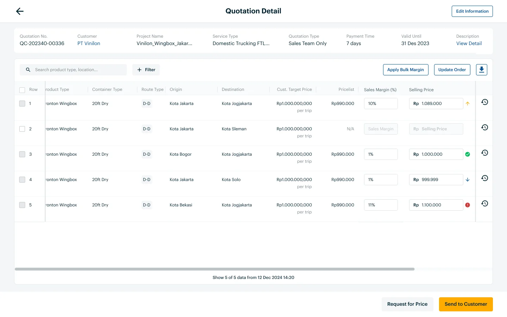
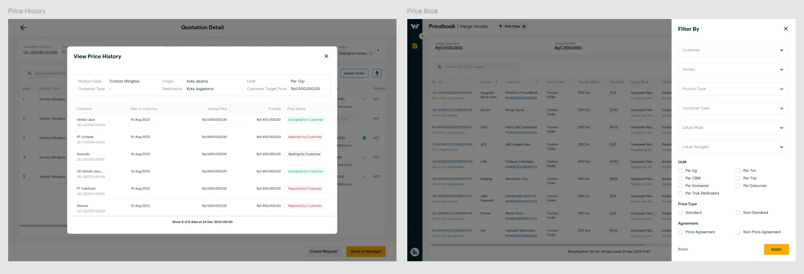
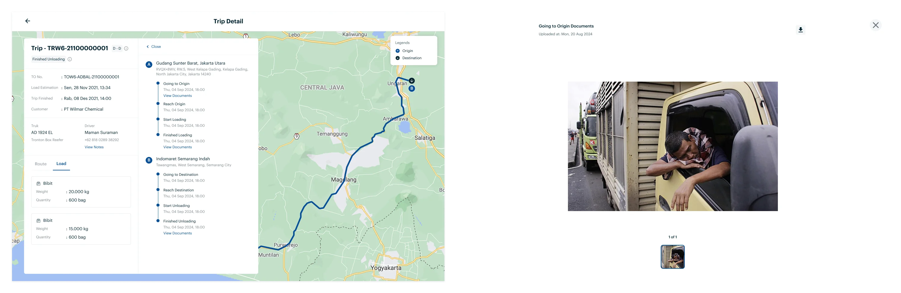
Results
Impact
To be clear, I designed the solution but the impact was a team effort. The PM defined the success metrics and set up the dashboard. Engineers built the data connections to make historical pricing accessible. And the Sales, Supply, and Pricing teams all had to adopt the new workflow for the numbers to move.
Reflection
Reflection
What went well
- Job shadowing was the most valuable research method on this project. Watching Supply officers work revealed patterns that interviews alone would have missed. The insight about pricing data being locked to specific tasks only became clear by observing the actual workflow.
- Presenting both options with clear trade-offs (instead of just recommending one) made it easier to get stakeholder buy-in. The team felt ownership over the decision because they weighed the trade-offs themselves.
- The approval flow for unprofitable quotes was the key safeguard that made the bolder option viable. Without it, the risk of Sales setting bad prices would have killed Option 2.
- Taking initiative after testing to design the Price History, Price Book, and Trip Details features made a big difference. These were not in the original scope, but the testing feedback made it clear that Sales needed more reference data to feel confident setting prices on their own.
What I would do differently
- Add real-time analytics to monitor quote performance after launchThe 57.2% improvement was measured, but ongoing monitoring would help identify new bottlenecks as they emerge.
- Spend more time on the change management sideSales resistance was understandable, and while we addressed it, a more structured rollout with training sessions and champions would have made adoption smoother.
- Explore automation opportunities furtherSome steps in the flow (like auto-filling prices for frequently quoted routes) could have been automated entirely instead of just making them faster.
Process